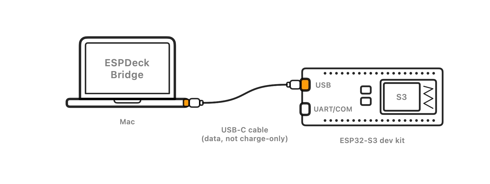
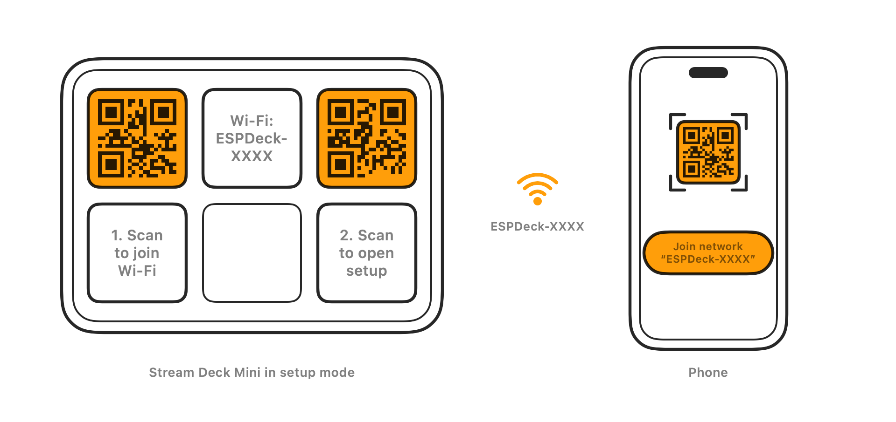

Install ESPDeck
Put the ESPDeck firmware on an ESP32-S3 dev kit, straight from your browser.
How it works
The Stream Deck plugs into a small ESP32-S3 board instead of a computer. The board joins your Wi-Fi and talks to ESPDeck Bridge, a Mac app that controls your HomeKit accessories and draws the keys. Press a key, and the Mac does the rest.
What you need


- An ESP32-S3 board with 16 MB flash and 8 MB PSRAM, such as the ESP32-S3-DevKitC-1 N16R8.
- An Elgato Stream Deck: Mini, MK.2, XL, Neo, +, Pedal, or one of the modules.
- A 5 V USB power supply rated 2 A or more, and its cable. It powers both the board and the Stream Deck.
- A passive USB-C OTG adapter with a power input: a USB-C plug for the board's native USB port, a USB-A port for the Stream Deck, and a USB-C port for the power supply. Adapters that need USB-PD negotiation may never switch on power to the Stream Deck.
- If the Stream Deck's cable ends in USB-C: a USB-A (male) to USB-C (female) adapter that includes the CC pull-up resistor. Choose one labeled for charging and sync (data), not charge-only; one that mentions a 56 kΩ resistor is the surest bet. Not needed if the cable ends in USB-A.
- A USB data cable (not a charge-only one) from your computer to the board's USB port, for installing.
- A Mac running ESPDeck Bridge, on the same network.
- A 2.4 GHz Wi-Fi network.
The parts link to ones known to work with ESPDeck, on Amazon. Those are affiliate links: as an Amazon Associate I earn from qualifying purchases, at no extra cost to you.
Install the firmware
Either way starts the same: connect the dev kit's USB port to the computer with a cable that carries data.

From this page, in Chrome or Edge on any desktop computer. Put the board in flashing mode, click Install, and pick its serial port.
- Use the board's USB port. The dev kit has two USB-C ports: USB (the chip's own) and UART, which many clone boards label COM. Install through USB. On some clones the COM port doesn't even power the board.
- Put it in flashing mode if it's new or runs other firmware. Hold BOOT (also B0 or IO0), press and release RST (also EN or RESET), then let go of BOOT. A board already running ESPDeck doesn't need this: plugged into a computer, its USB port stays a serial port.
- Click Install ESPDeck and choose the port that appears (on a Mac,
cu.usbmodem…; the names “USB JTAG/serial debug unit” or “Espressif”). - When it's done, press RST (or unplug and replug the board) if it doesn't restart on its own.
- Stay on this page: once ESPDeck starts, the installer offers to connect it to Wi-Fi. Choose your network and enter its password. If you skip this, the deck's QR codes set up Wi-Fi later.
Your browser can't talk to USB devices. Open this page in Chrome, Edge, or Firefox 151 or later on a Mac, Windows or Linux computer.
Installing needs a secure page. Open this page over https://.
Needs Chrome or Edge on a desktop computer; Firefox 151 and later support Web Serial too, but installing with Firefox is untested. Installing erases the board. ESPDeck's USB port only becomes the Stream Deck's host when a deck is attached instead of a computer, so reinstalling needs no buttons.
From ESPDeck Bridge on the Mac that will run your decks. The app finds the board, installs the firmware and sets up Wi-Fi in one place.
- Open USB Setup. In ESPDeck Bridge, choose USB Setup in the window's sidebar, or Set Up a Device over USB… in the menu bar menu.
- Plug in the dev kit by its USB port. The board appears under Board Info, with what it found: the chip, its flash and its memory. A board on the UART or COM port is shown with a note to move the cable.
- Click Install Firmware. The Firmware menu starts on the latest release, which the app checks against its signature before installing. The app puts the board in flashing mode itself. If the board runs firmware that ignores that, the page asks you to hold BOOT and press RST.
- Set up Wi-Fi. Choose your network, enter its password and click Join Network. A new board has Encrypt stored secrets checked, which keeps the password safe on the chip.
- Name the deck if you like, then unplug the board. The end of the page shows how to put the deck together.
Installing from the app keeps a board's Wi-Fi settings, name and pairing, so it's also the way to reinstall. ESPDeck Bridge is on its way to the Mac App Store; until then you can build it yourself. The setup guide has every detail.
After installing

- Plug the OTG adapter into the board's native USB port, the Stream Deck into the adapter's USB-A port, and the 2 A power supply into the adapter's power port. If you set up Wi-Fi in the installer, skip to the last step. Otherwise the deck shows two QR codes.
- Scan the left QR code with your phone's camera and join the board's own Wi-Fi network. Its name,
ESPDeck-XXXX, is also shown on the top-center key. - If your phone doesn't stay connected (an iPhone may switch back to your usual Wi-Fi, since this network has no internet), open Settings → Wi-Fi on the phone and choose that
ESPDeck-XXXXnetwork directly. Scanning the QR code already saved its password. - The setup page usually opens by itself once you're connected. If it doesn't, scan the right QR code. Name the deck and choose your Wi-Fi network there.
- Open ESPDeck Bridge on your Mac and click Pair with This Mac. Check that the 6-digit code on the Mac matches the deck, click The Deck Shows This Code, and hold Confirm on the deck.

Later updates come from ESPDeck Bridge over Wi-Fi; you only need this page once. To get back to setup, hold the top-left and bottom-right keys for 5 seconds.